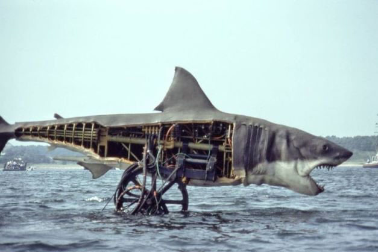
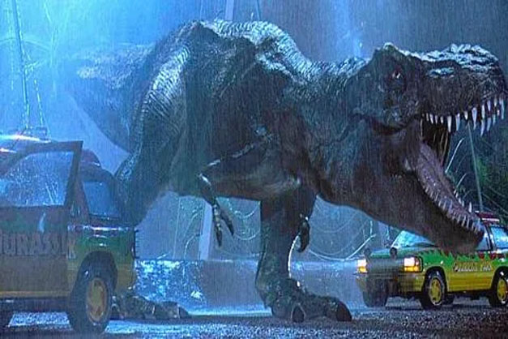
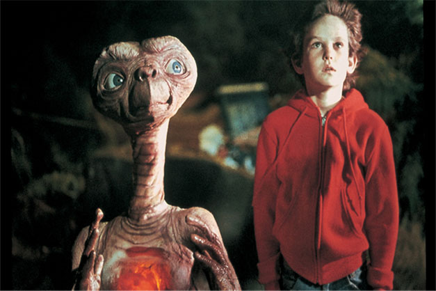
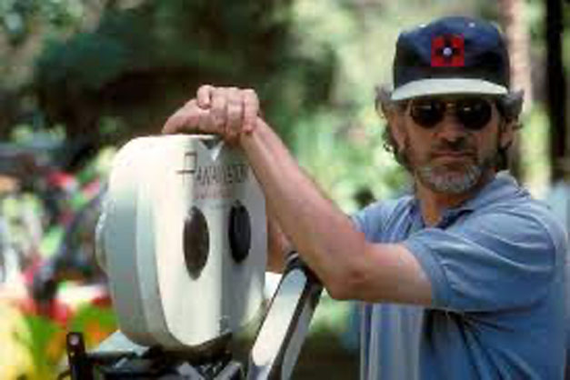

TECHNIQUES
In the Jaws movie there were a lot of problems with the casting, budget, script and pretty much anything else that could cause problems and it didn't help at all when Spielberg decided they had to shoot in the Atlantic Ocean which led to so many other complications. with the shark (key aspect for the film). The shark is given a lot of visual attention in the opening scene's attack on the girl swimmer in the initial storyboards. Spielberg had to come up with inventive techniques to "suggest" the shark rather than really show it because the mechanical shark rarely functioned. These methods included character (and shark) POV, partially submerged horizon lines, hurtling barrels, shifting docks, etc. The shark doesn't actually make an appearance until two-thirds of the way through the movie.
The original plan for Jurassic Park was for director Steven Spielberg to use as many practical effects as he could. In 1993, it was unheard of to finance a $60 million or more film on the strength of computer software that had barely been tested. Nearly every scene that accurately depicted dinosaurs depended on this technology and the limited number of experts who could predict its efficacy.Spielberg's utter awe at first seeing this technology is said to have inspired his stance, despite studio objections, but he listened to those in authority and drew all of his knowledge and inspiration from the practically staged movies of earlier eras, the director embraced every aspect he could and molded it to the great filmmakers' style. In a film that is remarkably motionless, Spielberg builds interest through the use of blocking (the movement of people and objects within a shot). It's in the scenes with the dinosaurs themselves where his proficiency in this field comes to the fore; his sensational use of space in both the T-Rex and velociraptor hunts is legendary because of how he makes their presence entirely believable. He uses it so effectively in brief scenes of exposition or sequences intended to enrich each of the characters.
When E.T. is being led by Michael and Elliott around their neighborhood, we observe the action from his perspective. The shot only needed a bedsheet and a lot of practice, no special effects were needed. Spielberg shot the film almost chronologically, as the events of the film happened, so that children could see everything more naturally and also notice the development of their emotions, they also had to hire dwarf actors to fit into E.T.'s rubber costume, and even a handicapped child with no legs was cast in the shadow of the puppet, which was also handled by stuntmen in some sequences. Several E.T. puppets were also created. electronically.
Steven Spielberg is and will continue to be one of the best directors of all time, thanks to the genius he has created over the years, Spielberg has always used practical and special effects well in his films. ones with different camera angles and levels that complemented these effects and kept the viewer hooked on the screen with techniques like moving the camera in XYZ spaces, creating images with many compositions, staging a play with a stage... and many other cool things which have been developed over the years.